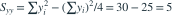

数据为  ，最小二乘直线为
，最小二乘直线为  。残差平方和SSE为？
。残差平方和SSE为？
，最小二乘直线为 。残差平方和SSE为？- A

- B
- C
- D
我已思考，展开答案与解析
正确答案：B

。- 解释平方和 。
- 。
易错提醒SSE是平方和；除以n−2后才得到常用误差方差无偏估计。
考后回忆 · 条件重建 · 回忆12的误差平方和变式
依据考试回忆重建；数字、选项和必要条件为补充设定，非原题。
，最小二乘直线为 。残差平方和SSE为？
。考后回忆 · 条件重建 · 回忆12的误差平方和变式
依据考试回忆重建；数字、选项和必要条件为补充设定，非原题。